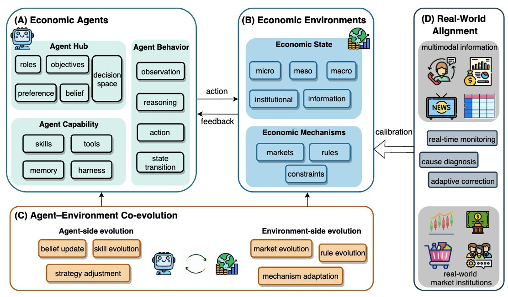
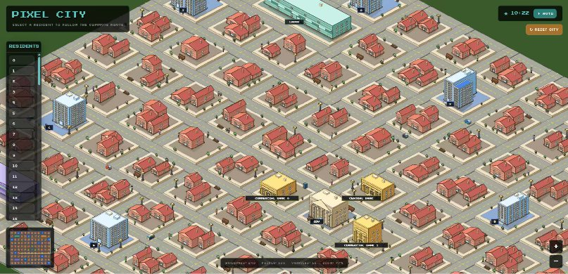
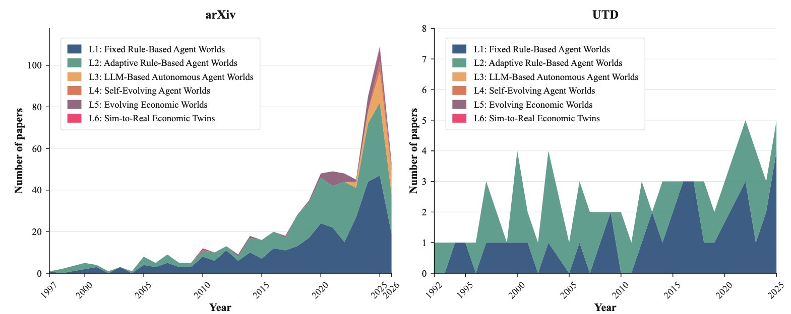
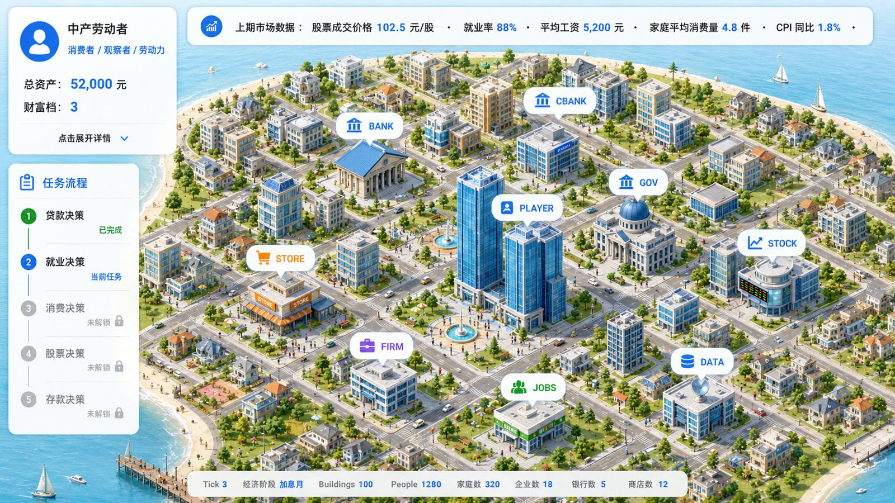

Institutional Intelligence
AI competition is increasingly about governance capacity, incentive design, and the ability to reason about institutions.
Center for AI for Social Science | Shenzhen Loop Area Institute
From perceptual intelligence to social intelligence for real-world complex systems.
Building AI systems for governance, markets, education, healthcare, culture, and public-good applications.
About
AI4S2 addresses a core gap in current AI research: technical optimization often advances faster than social context, institutional design, and cultural adaptation. The center develops a multidimensional social intelligence framework that integrates value alignment, social embedding, and cultural cognition.
Located within the Shenzhen Loop Area Institute ecosystem, AI4S2 connects artificial intelligence, economics and finance, computational social science, public governance, education, healthcare, and cultural cognition.
Why Social Science Intelligence
AI competition is increasingly about governance capacity, incentive design, and the ability to reason about institutions.
Markets, schools, hospitals, platforms, and cities are interactive systems made of people, organizations, rules, and AI agents.
Generative modeling and multi-agent simulation make it possible to test policies and strategies in a digital social sandbox.
Research Framework
Normative ethics and AI moral decision-making frameworks for responsible, accountable social systems.
Digital representation of social systems, digital governance simulation, multi-scale modeling, and social sensing.
Cultural semantic representation, adaptation mechanisms, and diffusion modeling for global engagement.
SLAI Ecosystem
Shenzhen Loop Area Institute organizes five core research centers around frontier AI and real-world applications. AI4S2 contributes the social simulation and think-tank layer: large models, multi-agent societies, visual analytics, policy evaluation, and human-centered governance.
The center is designed to serve high-stakes scenarios where decisions must be tested, calibrated, and explained before they are deployed.

Research Directions
Multi-agent modeling and computational simulation for markets, institutions, cities, and communities.
Long-term consistency between AI goals, human values, social norms, and risk management.
Cross-disciplinary, multimodal social science databases and intelligent data acquisition ecosystems.
Generative models that search policy and strategy spaces toward social and economic objectives.
Behavior, coordination, institutional impact, and governance in mixed human-agent societies.
AI for research paradigms, teaching modes, social services, and inclusive public-good applications.
Priority Projects

A foundation platform built on large models, heterogeneous agents, visual analytics, and AI assistants.

Policy shocks, market mechanisms, risk transmission, and institutional strategy testing.
Social-computing approaches for chronic disease management, early warning, and personalized intervention agents.

Learning agents, digital teachers, simulated students, and education-policy sandboxes for school governance.
Faculty
The homepage now distinguishes the AI4S2 core group from collaborators and faculty from the Center for Language, Intelligence and Machines (LIMA), the second SLAI research center.
Center leadership and core professors listed in the AI4S2 center materials.
Professor, Nanyang Technological University
Assistant Professor, The Chinese University of Hong Kong, Shenzhen
Professor
Associate Professor, The University of Hong Kong
Associate Professor, Huazhong University of Science and Technology
Professor, The Chinese University of Hong Kong, Shenzhen
Faculty from the Center for Language, Intelligence and Machines (LIMA) whose work connects language, agents, interaction, and social intelligence.
Professor, Shenzhen Loop Area Institute and CUHK-Shenzhen
Associate Professor, Shenzhen Loop Area Institute
Assistant Professor, Shenzhen Loop Area Institute
Academic Community
AI4S2 organizes seminars and workshops on humans, machines, distributed networks, economic world models, agentic intelligence, privacy, and AI for econometrics.
Winter Institute on Humans, Machines, and Distributed Networks
CCF at SLAI: Agentic Intelligence for Human-AI Society
AI for Social Science and Economic World Models
Media Library
The original embedded media from the project-highlight and AI4S2 introduction decks is preserved here for reports, slides, public communication, and future website updates.
Connect
AI4S2 welcomes students, research assistants, engineers, faculty collaborators, industry partners, and public-sector collaborators interested in AI for social science and digital social simulation.